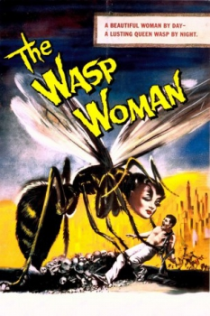
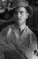

Country:United States, 61 minutes
Spoken languages:English
Genres:Horror, Sci-Fi
Director(s):Roger Corman
Writer(s):Leo Gordon
Video Codec:Unknown
Number: 218


Certification:
Storyline:
The head of a major cosmetics company experiments on herself with a youth formula made from royal jelly extracted from wasps, but the formula's side effects have deadly consequences.
Cast: 


Medium: Original DVD,
Comments: Part of: Roger Corman Drive-In Collection box set
Loaned: No
Aspect ratio: Unknown